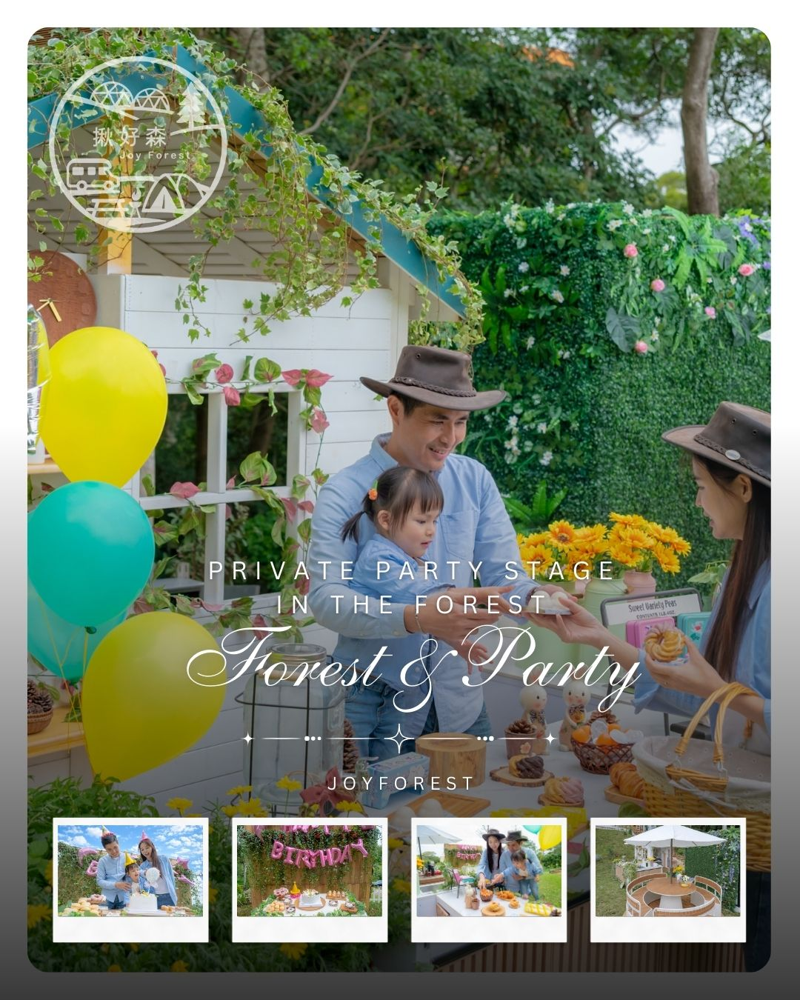

桃園露營區推薦｜想找安靜又有空間感的森林露營體驗
在桃園想找露營區，很多人其實不是想要熱鬧，而是想找到真正能放鬆的空間。
為了讓內容不流於空泛，本頁採用「官方旅遊資料 + 露營倫理 + 公開方案比較」三段式結構。閱讀時建議先看比較維度（價格帶、服務模式、空間密度），再對照自己的旅伴組成與預算範圍，決策通常會更快更準。
如果你正在找桃園露營區推薦，真正值得優先考慮的，往往不是帳數很多的大型營區，而是能讓人真正放鬆下來的空間。
位於桃園楊梅的森林系露營空間，提供兩座獨立圓頂帳篷與各自的專屬草地活動區。比起人多、密集、吵雜的露營區，這樣的安排更適合家庭、情侶與朋友小旅行。
在這裡，露營不只是住在帳篷裡，而是擁有一整片可以聊天、吃飯、放空、吹風的生活空間。從白天到晚上，都保有一種安靜、舒服、被森林包圍的節奏。
對於很多第一次接觸露營的人來說，桃園豪華露營會比傳統露營更容易入門。因為不需要自己搭帳，也不需要準備太多裝備，卻仍然保有自然、草地與夜晚燈光的氛圍。
如果你在找的是：
- 桃園露營區推薦
- 楊梅露營區
- 森林系露營
- 草地空間大的露營住宿
那麼這種每區約 100坪的專屬露營方式，會比一般營區更值得體驗。
市場比較與公開方案觀察
桃園與楊梅周邊的露營市場優勢，在於『交通半徑短、可快閃、可分眾』。對雙北與新竹旅客來說，移動時間可控，適合把兩天一夜做成高品質短假期。比較在地場域時，除了價格與房型，還要看是否能支援不同團型：情侶、親子、朋友、企業小團。
若你在意的是效率，建議看公開方案裡的『可直接入住程度』；若在意的是質感與沉浸，則要看夜間環境、活動規劃與空間私密度。第一次來桃園露營，準備上可採『都會近郊思維』：行李可精簡，但保暖、防風、防雨不能省。市場上常見的服務組合包含一泊多食、房型升級、主題活動與包場方案，挑選時要先決定你想要放鬆、拍照、還是互動型行程。
用『交通時間 + 入住摩擦成本 + 活動適配』三個指標評估，通常比單看最低價更能找到真正適合的場域。
比較前先看這四件事
- 交通效率：國道可達性與塞車風險
- 近郊兩天一夜是否能完整體驗場域價值
- 可否支援情侶／親子／朋友多團型需求
- 平假日價差與檔期公告是否透明
| 品牌／場域 | 常見公開價格帶（雙人） | 特色重點 | 適合族群 |
|---|---|---|---|
| 揪好森 Joyforest（桃園楊梅） | 依房型／檔期詢價 | 少帳包場、雙圓頂帳、森林草地與彈性活動動線 | 重視隱私、希望客製流程的小團體 |
| 朋趣 Bon Chill（桃園） | 約 NT$7,600 起（公開專案常見） | 桃園近郊可達性高，服務流程完整 | 雙北短天數旅客 |
| 桃禧漫遊渡假露營園區（桃園） | 約 NT$9,800 起（園區方案） | 園區化設備齊全，適合免裝備入住 | 重視舒適與機能者 |
| 蟬說：霧繞（新竹） | 約 NT$6,000～9,200（方案） | 森林系路線，夜間氛圍與導覽資源多 | 喜歡自然導向主題者 |
| 皇后鎮森林（三峽） | 約 NT$4,500～8,000（區位與方案） | 近都會區、親子機能成熟 | 想降低車程負擔的家庭 |
以上資訊依 2026/04 公開頁面與旅遊平台可查資料整理，主要用途是協助前期篩選與行程規劃，不取代最終報價與入住條款。建議出發前 7～14 天再次確認最新公告。
參考來源：台灣觀光署、桃園觀光導覽網、TaiwanPlus YouTube。